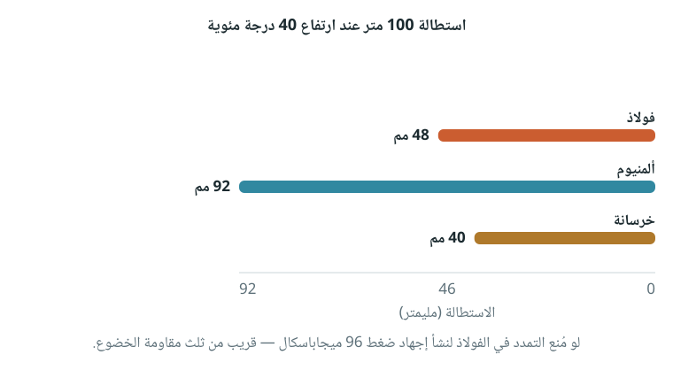

الإجهاد الحراري عند تقييد التمدد
إذا سُمح لعنصر فولاذي بالتمدد عند تسخينه، استطال بحرية. أما إذا مُنع من الاستطالة، فينشأ فيه إجهاد ضغط يمكن تقديره من خواص الفولاذ وفرق الحرارة.
إذا كان العنصر حرّاً في طرفيه، فإنه يستطيل بمقدار يُحسب من معامل التمدد الحراري وطوله الأصلي وفرق الحرارة. في نموذج التسخين المنتظم، لا ينشأ إجهاد محوري من التمدد الحر.
أما إذا كان العنصر مقيداً من الطرفين ومنع من الاستطالة، فيقابل الانفعال الحراري انفعال ميكانيكي بالضغط، وينشأ إجهاد ضغط في العنصر. وهذا الإجهاد لا يُرى بالعين ولا يظهر في أي حركة، لكنه موجود ويؤثر في العنصر تماماً كأن حمل خارجي ضغطه.
التقييد الكامل حالة حدّية نظرية. في كثير من المنشآت يكون التقييد جزئياً، فينشأ إجهاد أقل من القيمة الحدية، ويُعالج عادة بفواصل تمدد أو دعامات منزلقة أو مرونة موزعة في التصميم.
حدود هذا التحليل: يُفترض سلوك مرن خطي، وثبات معامل التمدد ومعامل المرونة خلال فرق الحرارة، وعدم وجود انبعاج أو زحف. عند تجاوز حدّ المرونة يصبح هذا التقدير غير صالح، ويجب الانتقال إلى تحليل لا خطي.
كيف تعمل الظاهرة؟
عند تسخين العنصر تتولد نزعة للتمدد تحددها خواص مادته. إذا بقي الطول ثابتًا بفعل تقييد الطرفين، يساوي الانفعال الميكانيكي انفعال التمدد الحراري في المقدار ويعاكسه في الاتجاه. وتظهر نتيجة هذا الانفعال الميكانيكي في صورة إجهاد ضغط وقوى رد فعل عند الطرفين.
العلاقة بالأرقام
عضو فولاذي طوله 100 متر يتعرض لارتفاع حرارة 40 كلفن، بمعامل تمدد 12×10⁻⁶ لكل كلفن ومعامل مرونة 200 جيجاباسكال. إذا كان حرّاً في طرفيه يستطيل 48 مليمتراً بلا إجهاد. وإذا مُنع من التمدد كلياً ينشأ إجهاد ضغط قدره 96 ميجاباسكال. لاحظ أن الإجهاد لا يعتمد على الطول، بينما تعتمد الاستطالة الحرة عليه.
مفاهيم متقاربة
الاستطالة الحرة تغيّر في طول العنصر، فتُقاس بالمليمتر. وإجهاد الضغط قوة محورية على وحدة المساحة، فيُقاس بالميجاباسكال. عند التمدد الحر في هذا النموذج تكون الاستطالة ممكنة من دون إجهاد محوري. وعند التقييد الكامل يبقى الطول ثابتًا ويظهر إجهاد الضغط.
حدود التطبيق
يفترض الحساب سلوكاً مرناً خطياً وثبات الخواص مع الحرارة. عند تجاوز حدّ المرونة لا يصلح التقدير الخطي، ويجب استخدام تحليل لا خطي. التقييد الكامل حدّ أعلى نظري؛ التقييد الجزئي يعطي إجهاداً أقل. كما لا يشمل التقدير الانبعاج في الأعضاء النحيلة ولا الزحف عند الحرارة العالية، وكلاهما قد يحكم التصميم قبل الوصول إلى هذا الإجهاد.

| الكمية | القيمة | المصدر |
|---|---|---|
| الاستطالة الحرة لعضو فولاذي طوله 100 م عند فرق حرارة 40 كلفن | 48 mm | [1] |
| إجهاد الضغط عند التقييد الكامل للعضو نفسه | 96 MPa | [1] |
| معامل التمدد الحراري للفولاذ المستخدم في المثال | 12×10⁻⁶ 1/K | [1] |
| معامل المرونة للفولاذ المستخدم في المثال | 200 GPa | [1] |
المصادر
- 1 University Physics Volume 2 — Thermal Expansion — OpenStax. openstax.org/books/university-physics-volume-2/pages/1-3-thermal-expansion · اطُّلع عليه 2026-11-17
استشهد بهذا المصطلح
الصيغتان مبنيتان من بيانات الصفحة نفسها: العنوان والتاريخ ورابط النسخة المنشورة.
الإجهاد الحراري عند تقييد التمدد. (2026). ديوان المعرفة — انفراد. https://infiradev.com/diwan/terms/restrained-thermal-stress.html
@misc{restrained-thermal-stress2026,
title = {الإجهاد الحراري عند تقييد التمدد},
howpublished = {{ديوان المعرفة — انفراد} — مرجع علمي عربي},
year = {2026},
url = {https://infiradev.com/diwan/terms/restrained-thermal-stress.html},
urldate = {2026-11-17},
note = {مراجعة علمية: عبدالله الهويدي — مراجعة في تطبيق انفراد}
}
راجعه: عبدالله الهويدي — مراجعة في تطبيق انفراد · 2026-11-17 · آخر تحديث 2026-11-17